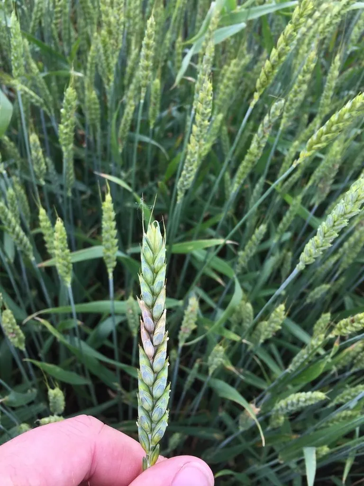

真菌 · 真菌界
禾谷镰刀菌 Fusarium graminearum

引起小麦赤霉病和水稻恶苗病的重要病原菌，产生的镰刀菌毒素会污染粮食，是农业与食品安全关注的重点。
- 分类
- 门子囊菌门纲粪壳菌纲目肉座菌目科丛赤壳科属镰刀菌属
- 栖息环境
- 小麦、玉米等禾谷类作物的穗部和残体，抽穗扬花期遇雨易流行
- 地理分布
- 全球小麦主产区，中国长江中下游和北方麦区均有发生
- 保护级别
- 暂无评估（植物病原菌，非保护对象）
物种志
禾谷镰刀菌是子囊菌门肉座菌目的植物病原真菌，菌丝白色至粉红色，在培养基上产生镰刀形的大分生孢子和粉红色菌落。有性世代在寄主残体上形成子囊壳，释放子囊孢子，借风雨传播，侵染小麦穗部，形成赤霉病的典型症状。
禾谷镰刀菌是小麦赤霉病的主要病原菌，也可侵染玉米、水稻和大麦等禾谷类作物。病穗上会出现粉红色霉层，籽粒干瘪，并可能积累脱氧雪腐镰刀菌烯醇（DON，俗称呕吐毒素）等真菌毒素，人畜食用后会出现呕吐、腹泻等中毒症状，长期摄入还有健康风险。该病害在抽穗扬花期遇连阴雨时最易流行，防治以选用抗病品种、合理轮作、清沟排渍和适时喷药为主，同时要加强粮食中的毒素检测。
形态与习性
- 分类子囊菌门肉座菌目丛赤壳科镰刀菌属
- 菌落白色至粉红色
- 孢子镰刀形大分生孢子，有性世代产生子囊孢子
- 病害小麦赤霉病，也侵染玉米、水稻和大麦
- 毒素产生呕吐毒素（DON）等真菌毒素
- 防控抗病品种、合理轮作、清沟排渍和适时喷药
趣味知识
- 禾谷镰刀菌是小麦赤霉病的主要病原菌，病穗上会长出粉红色霉层。
- 它产生的呕吐毒素会污染粮食，人畜食用后可能中毒。
- 小麦抽穗扬花期遇到连阴雨，赤霉病最容易流行。